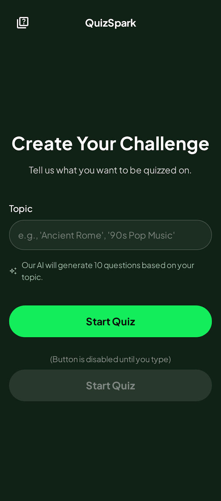
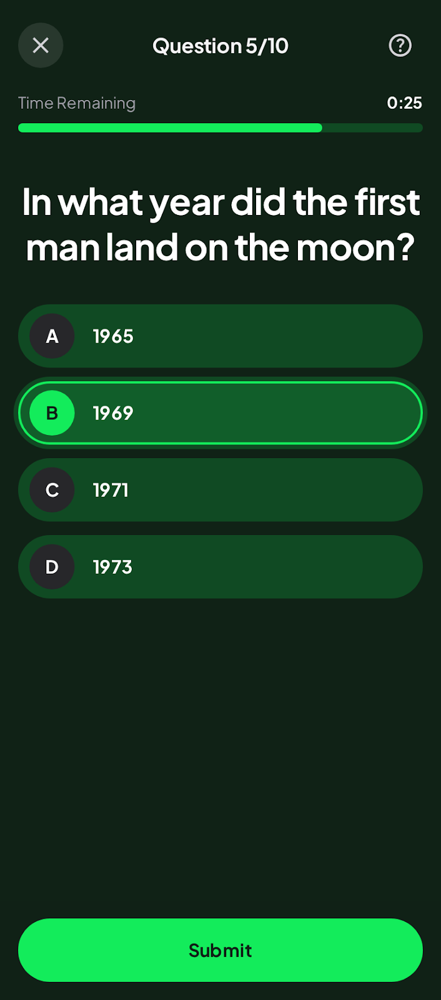
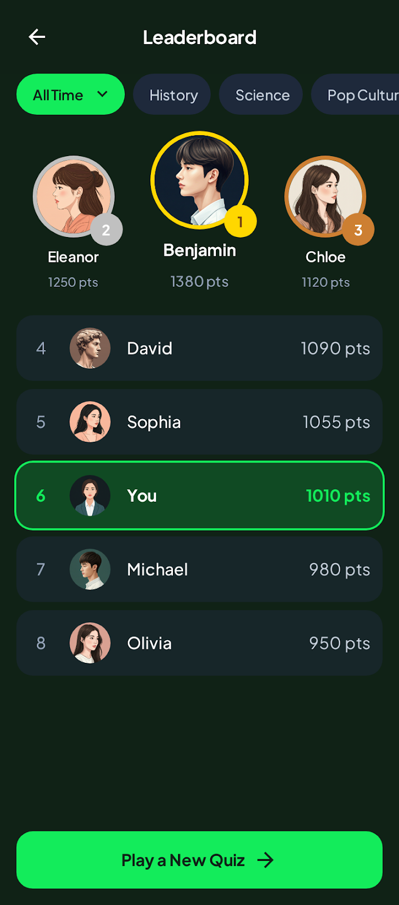

About this codelab
Author: Carlos Mota
Source: GitHub Repository
Feedback: Submit Issues
Last Updated: November 21, 2025
In this Codelab, you'll build Quiz Spark, a fully functional Android application that uses Gemini to generate quizzes on any topic a user enters. You'll use Firebase AI Logic to create the questionsa and Firebase Firestore to store and display a live leaderboard.
This Codelab is designed for those who have some basic experience with Android development but are new to generative AI with Gemini or backend services with Firebase. We'll explain every concept step-by-step.
What you'll build
You'll build a complete Android app with three main screens:
- Intro Screen: A screen where the user can enter any topic (e.g., "Roman History," "Kotlin Programming," "Marine Biology").
- Quiz Screen: A screen that displays 10 multiple-choice questions about the chosen topic, generated in real-time by Gemini.
- Leaderboard Screen: A screen that shows the highest scores, saved to and read from a live Firebase Firestore database.

Note: These screens were generated using Google Stitch - an AI-powered design tool from Google that transforms text prompts, sketches, or screenshots into user interface (UI) designs for web and mobile apps.
What You'll Learn
- How to integrate the Firebase Logic AI into an Android app.
- How to configure your Gemini calls to get structured, reliable output.
- How to use Firebase Firestore to save and retrieve data in real-time.
- How to structure a modern Android app using Jetpack Compose and ViewModels.
- How to build a clean, multi-screen navigation flow in Compose.
What you'll need
- The latest version of Android Studio.
- A Firebase project.
- Basic knowledge of the Kotlin programming language.
- An Android device or emulator.
Start by checking out the starter project source code from GitHub:
git clone -b starter https://github.com/cmota/QuizSpark.git
The starter key that you see on the command, is to checkout the starter branch of the project.
You can directly access the final implementation of the source code by checking out the main branch:
git switch main
Or remove the -b option from the git clone command:
git clone https://github.com/cmota/QuizSpark.git
Before we start coding, we need to set up our Firebase backend. QuizSpark uses two Firebase services:
- Firebase AI Logic (Gemini): To generate the quiz questions.
- Firebase Firestore: To save and load the leaderboard scores.
Create a Firebase Project
- Go to the Firebase console.
- Click Create a new Firebase project and follow the on-screen instructions to create a new project. Give it a name like "QuizSpark".
Once everything is set click on continue to open your new Firebase project configuration screen.
Add Firebase to your Android App
In your new project's Project Overview, click on + Add app and then select the Android icon to launch the setup wizard.
Enter your application's package name. You can find this in your app/build.gradle.kts file (it's com.cmota.quizspark for this project).
Although it's option, you can also add the app nickname, which is useful when you have several apps on your project, to easily identify them.
Download the google-services.json file and place it in your app's module (app-level) directory (usually app/).
The Firebase wizard's shows you the instructions to add the Firebase SDKs (Bill of Materials) to your build.gradle.kts files.
On your starter project you already have all the plugins and libraries that you're going to use set, so you can skip these steps.
Note: This project uses Gradle's version catalog. This means that the project plugins and libraries, along its versions are defined on gradle/libs.versions.toml. Although, this was created for a multi-module project to handle all the versions under the same file, it's a recommended practice for every project.
Enable Required Services
Enable Firebase AI Logic
- In the Firebase console, navigate to AI in the left-hand menu.
- Click Get started.
- Select Get started with this API under the Gemini Developer API card.
- Follow the prompts on the screen to enable this API.
Note: The dependencies are already added to the project, so you can skip this step.
Enable Firebase Firestore
- In the Firebase console, go to Build > Firestore Database.
- Click Create database.
- Select Standard Edition since you're not going to store a lot of information on the database.
- Start in Test mode. This allows us to read and write to the database without complex authentication rules. For a production app, you should set up more secure rules.
Note: The dependencies are already added to the project, so you can skip this step.
Dependencies
Open your app/build.gradle.kts file. You can see the Firebase dependencies added:
// Firebase Bill of Materials (BoM)
implementation(platform(libs.firebase.bom))
// Firebase AI (for Gemini)
implementation(libs.firebase.ai)
// Firebase Firestore (for Leaderboard)
implementation(libs.firebase.firestore)
They're defined in gradle/libs.versions.toml:
# Firebase Bill of Materials (BoM)
firebase-bom = { module = "com.google.firebase:firebase-bom", version.ref = "firebaseBom" }
# Firebase AI (for Gemini)
firebase-ai = { module = "com.google.firebase:firebase-ai" }
# Firebase Firestore (for Leaderboard)
firebase-firestore = { module = "com.google.firebase:firebase-firestore" }
With the backend ready, let's start building the app!
A good app starts with a clear data structure. We have two main data models: Question and User.
Question Model
This defines the structure for a single quiz question. We'll tell the Gemini API to provide its response in this exact format. The @Serializable annotation is from the Kotlinx Serialization library, which will help us parse the JSON response from Gemini easily.
Create the file java/com/cmota/quizspark/model/Question.kt:
package com.cmota.quizspark.model
import kotlinx.serialization.Serializable
@Serializable
data class Question(
val question: String = "",
val options: List<String> = emptyList(),
val correct: Int = 0
)
User Model
This defines the data we'll store in our Firestore leaderboard for each user. @DocumentId tells Firestore to automatically populate the `uid field with the document's unique ID.
This file is already created and located in java/com/cmota/quizspark/model/User.kt:
package com.cmota.quizspark.model
import com.google.firebase.firestore.DocumentId
data class User(
@DocumentId val uid: String? = null,
val username: String = "",
val score: Long = 0L
)
Before building screens, let's set up our app's visual style (Theme) and how we move between screens (Navigation).
Theme
Our theme files define the app's look and feel, including colors and typography. This project uses a dark, "spark" theme.
java/com/cmota/quizspark/ui/theme/Color.kt
Defines our custom colors likedarkGreenBackgroundandbrightGreen.java/com.cmota/quizspark/ui/theme/Type.kt
Sets up the font styles.java/com/cmota/quizspark/ui/theme/Theme.kt
Brings it all together in aQuizSparkThemecomposable, which wraps our entire application.
Navigation
The app uses Navigation 3.
- Navigation Routes: First, we define our screens (routes) as serializable objects. This is a clean, type-safe way to manage navigation.
Create java/com/cmota/quizspark/ui/navigation/NavigationRoutes.kt:
package com.cmota.quizspark.ui.navigation
import androidx.navigation3.runtime.NavKey
import kotlinx.serialization.Serializable
@Serializable
data object Intro: NavKey
@Serializable
data object Quiz: NavKey
@Serializable
data object Leaderboard: NavKey
Each one of this data objects correspond to an app screen.
- Main Navigation Graph: This file,
MainNavigation.kt, is the app's "scaffolding." It defines which screen is shown and how to transition between them. It also initializes and passes ourViewModelsto the correct screens.
Update the existing file - java/com/cmota/quizspark/ui/navigation/MainNavigation.kt:
package com.cmota.quizspark.ui.navigation
import androidx.compose.runtime.Composable
import androidx.navigation3.runtime.entryProvider
import androidx.navigation3.runtime.rememberNavBackStack
import androidx.navigation3.ui.NavDisplay
import com.cmota.quizspark.ui.leaderboard.LeaderboardViewModel
import com.cmota.quizspark.ui.questions.QuestionsViewModel
import com.cmota.quizspark.ui.screens.IntroScreen
import com.cmota.quizspark.ui.screens.LeaderboardScreen
import com.cmota.quizspark.ui.screens.QuizScreen
@Composable
fun MainNavigation(
questionsViewModel: QuestionsViewModel,
leaderboardViewModel: LeaderboardViewModel
) {
// Start the app with the Intro screen
val backStack = rememberNavBackStack(Intro)
NavDisplay(
backStack = backStack,
onBack = { backStack.removeLastOrNull() },
entryProvider = entryProvider {
entry<Intro> {
// Your Intro screen will be called here
}
entry<Quiz> {
// Your Quiz screen will be called here
}
entry<Leaderboard> {
// Your Leaderboard screen will be called here
}
}
)
}
Because there are no screens built yet, the content of each entry is empty. We will return to this file as we finish each screen.
- Main Activity: Finally,
MainActivity.ktis the app's entry point. It sets up ourQuizSparkThemeand callsMainNavigation, injecting our ViewModels.
You can see this in java/com/cmota/quizspark/MainActivity.kt:
package com.cmota.quizspark
// ... imports
import androidx.activity.viewModels
import com.cmota.quizspark.ui.leaderboard.LeaderboardViewModel
import com.cmota.quizspark.ui.navigation.MainNavigation
import com.cmota.quizspark.ui.questions.QuestionsViewModel
import com.cmota.quizspark.ui.theme.QuizSparkTheme
class MainActivity : ComponentActivity() {
private val questionsViewModel: QuestionsViewModel by viewModels()
private val leaderboardViewModel: LeaderboardViewModel by viewModels()
override fun onCreate(savedInstanceState: Bundle?) {
super.onCreate(savedInstanceState)
enableEdgeToEdge()
setContent {
QuizSparkTheme {
MainNavigation(
questionsViewModel = questionsViewModel,
leaderboardViewModel = leaderboardViewModel
)
}
}
}
}
This is our simplest screen. It's composed of a text field and a button.
Create java/com/cmota/quizspark/ui/screens/IntroScreen.kt.
Note: You also need to create the screens folder. You can easily do that, by selecting the ui folder and right click on it, followed by New > Package.
The UI is built with standard Jetpack Compose composables like Column, Text, OutlinedTextField, and Button.

This screen needs to do two things: present a clean title bar and provide a form for the user to enter their quiz topic.
Paste the code above into your file, and let's walk through what's happening, starting from the outside and working our way in.
@OptIn(ExperimentalMaterial3Api::class)
@Composable
fun IntroScreen(
navigateToQuiz: (String) -> Unit
) {
Scaffold(
topBar = {
CenterAlignedTopAppBar(
title = {
Text(
text = stringResource(R.string.app_name)
)
}
)
}
) { innerPadding ->
IntroContent(
modifier = Modifier.padding(innerPadding),
navigateToQuiz = navigateToQuiz
)
}
}
This is your public entry point. It accepts a lambda function, navigateToQuiz, which takes a String. This is how we will pass the user's chosen topic to the next screen later on.
We use a Scaffold to set up the standard Material Design layout:
topBar: We use aCenterAlignedTopAppBarto display the app's name.
Note: You'll see @OptIn(ExperimentalMaterial3Api::class) at the top. This is currently required because the Material 3 TopAppBar API is still technically experimental, though stable enough for us to use!
innerPadding: The Scaffold provides this padding to ensure your content doesn't get hidden behind the top bar or system status bars. We pass this directly to our content composable.
@Composable
private fun IntroContent(
modifier: Modifier,
navigateToQuiz: (String) -> Unit
) {
Column(
modifier = modifier
.fillMaxSize()
.padding(16.dp),
verticalArrangement = Arrangement.Center
) {
Column(
modifier = Modifier.fillMaxWidth(),
horizontalAlignment = Alignment.CenterHorizontally
) {
Text(
text = stringResource(R.string.intro_create_your_challenge),
style = MaterialTheme.typography.displayMedium
)
Spacer(modifier = Modifier.height(16.dp))
Text(
text = stringResource(R.string.intro_create_your_challenge_hint),
style = MaterialTheme.typography.titleLarge
)
}
Spacer(modifier = Modifier.height(64.dp))
Text(
text = stringResource(R.string.intro_topic)
)
Spacer(modifier = Modifier.height(8.dp))
val topic = remember { mutableStateOf("") }
OutlinedTextField(
value = topic.value,
onValueChange = { topic.value = it },
modifier = Modifier.fillMaxWidth(),
placeholder = {
Text(
text = stringResource(R.string.intro_topic_hint)
)
},
shape = RoundedCornerShape(50),
singleLine = true
)
Spacer(modifier = Modifier.height(16.dp))
Row {
Icon(
painter = painterResource(R.drawable.ic_generated),
stringResource(R.string.description_generated)
)
Spacer(modifier = Modifier.width(8.dp))
Text(
text = stringResource(R.string.intro_ai_info)
)
}
Spacer(modifier = Modifier.height(64.dp))
Button(
onClick = { navigateToQuiz(topic.value) },
modifier = Modifier.fillMaxWidth(),
shape = RoundedCornerShape(50),
enabled = topic.value.isNotEmpty()
) {
Text(
text = stringResource(R.string.intro_start),
style = MaterialTheme.typography.titleLarge,
modifier = Modifier.padding(top = 8.dp, bottom = 8.dp),
fontWeight = FontWeight.Bold
)
}
}
}
This is where the heavy lifting happens.
We use a root Column to stack elements vertically. By using Arrangement.Center, we ensure the form sits comfortably in the middle of the screen rather than bunching up at the top.
Inside this column, we have three main sections:
- The Header: We nest a second Column here to group the title and the subtitle.
- The Title uses
displayMediumfor large, bold text. - The Subtitle uses
titleLargeto provide a hint to the user. - We use
Spacerelements throughout the layout. These are invisible blocks that add breathing room between your widgets, preventing the UI from looking cluttered.
- The Title uses
- The Input Field: This is the most interactive part of the screen.
val topic = remember { mutableStateOf("") }
OutlinedTextField(
value = topic.value,
onValueChange = { topic.value = it },
...
)
topic: We useremember { mutableStateOf("") }to hold the text the user types. Because this is a State object, any timetopic.valuechanges, Compose will automatically redraw the text field to show the new letter.OutlinedTextField: This is the standard Material input box. We give it aRoundedCornerShape(50)to make it pill-shaped and set `singleLine = true so the keyboard shows a "Done" or "Next" action instead of a new line.
- The Action Button: Finally, we have the "Start" button at the bottom.
Button(
onClick = { navigateToQuiz(topic.value) },
enabled = topic.value.isNotEmpty(),
...
)
enabled: The button is disabled (greyed out) as long as the topic text is empty. The user can't proceed until they type something.onClick: When clicked, we trigger theMapsToQuizcallback we passed down from the top, sending the `topic.value along with it.
This is the heart of the application. We'll use a ViewModel to handle the logic of calling the Gemini API and parsing its response.
UI State
First, we need a way to represent the different states of this request: Is it loading? Did it succeed? Did it fail? A sealed interface is perfect for this.
Create java/com/cmota/quizspark/ui/questions/UiState.kt:
package com.cmota.quizspark.ui.questions
import com.cmota.quizspark.model.Question
sealed interface UiState {
data object Initial : UiState
data object Loading : UiState
data class Success(val questions: List<Question>) : UiState
data class Error(val message: String) : UiState
}
Questions ViewModel
This is where the magic happens. This class is responsible for all the logic related to the quiz.
Open java/com/cmota/quizspark/ui/questions/QuestionsViewModel.kt.
Before the class declaration you can see this constant defined:
private const val QUESTIONS = 10
This is going to used later one, and it's this value that defines the number of questions to be generated.
Let's break it down.
System Instruction
This is a critical concept. We give the Gemini API a "system instruction" that tells it how to behave. We instruct it to be a quiz assistant and, most importantly, to only respond with a valid JSON array matching our `Question data model.
Inside the class declaration add:
private val systemInstruction = """
You are a quiz generation assistant.
Your response MUST be a single, valid JSON array.
The array must contain exactly $QUESTIONS JSON objects.
Do not add any other text, explanation, or markdown formatting around the JSON.
Each JSON object in the array must match this exact structure:
{
"question": "The question text as a string.",
"options": "A list of 4 strings for the answers.",
"correct": "The 0-based index (integer) of the correct answer."
}
"""
Model Initialization
Now, it's time to initialize the generativeModel:
Firebase.ai(backend = GenerativeBackend.googleAI())to get the service.modelNameindicates which model you're going to usegenerationConfigalong with thesystemInstructionthat you've defined previously, enables JSON mode, ensuring the API's output is only the JSON we asked for.
private val generationConfig = generationConfig {
responseMimeType = "application/json"
}
private val generativeModel by lazy {
Firebase.ai(backend = GenerativeBackend.googleAI())
.generativeModel(
modelName = "gemini-2.5-flash-lite",
generationConfig = generationConfig,
systemInstruction = content {
text(systemInstruction)
}
)
}
Note: You need to import content from import com.google.firebase.ai.type.content.
After everything is set, define the JSON parser, so you can deserialize the response.
private val jsonParser = Json { ignoreUnknownKeys = true }
Generating the Quiz
Start by declaring these properties:
private val _question = MutableStateFlow(Question())
val question: StateFlow<Question> = _question.asStateFlow()
private val _questions = MutableStateFlow<UiState>(UiState.Initial)
val questions: StateFlow<UiState> = _questions.asStateFlow()
private val _indexCurrent = MutableStateFlow(0)
val indexCurrent: StateFlow<Int> = _indexCurrent.asStateFlow()
private val _indexLast = MutableStateFlow(QUESTIONS)
val indexLast: StateFlow<Int> = _indexLast.asStateFlow()
private val answered = mutableListOf<Int>()
They're going to be responsible to notify the UI with new content:
question: hold the current questionquestions: defines the state of the request and contains all the questions in case it'sSuccessindexCurrent: the number of the current questionindexLast: the total number of questionsanswered: the user answers.
Now, add generateQuiz function:
fun generateQuiz(topic: String) {
viewModelScope.launch {
try {
answered.clear()
_questions.value = UiState.Loading
val prompt = "Generate $QUESTIONS question about $topic."
val response = generativeModel.generateContent(prompt)
val questions = jsonParser.decodeFromString<List<Question>>(response.text ?: "")
_question.value = questions.first()
_questions.value = UiState.Success(questions)
_indexLast.value = questions.size
_indexCurrent.value = 1
} catch (e: Exception) {
Log.d(TAG, "Error: ${e.message}")
_questions.value = UiState.Error(e.message ?: "An unknown error occurred")
}
}
}
Here's a break down of it's logic:
- It sets the state to
Loading. - It creates a simple prompt, like "Generate 10 questions about Roman History."
- It calls
generativeModel.generateContent(prompt). - Because we set up JSON mode, the
response.textwill be a clean JSON string. - We use
jsonParser.decodeFromStringto turn that string into aList. - We update the state to
Success, passing in the list of questions.
Helper Functions
The answerQuestion and score functions handle the quiz logic, like moving to the next question and counting the correct answers at the end.
fun answerQuestion(answer: Int) {
val data = _questions.value
if (data !is UiState.Success) {
return
}
answered.add(answer)
if (answered.size < data.questions.size) {
_question.value = data.questions[answered.size]
_indexCurrent.value = answered.size + 1
}
}
fun score(): Int {
val data = _questions.value
if (data !is UiState.Success) {
return 0
}
return answered.zip(data.questions)
.count { (answer, question) ->
answer == question.correct
}
}
Now that everything is set, return to MainNavigation.kt and inside entry add:
IntroScreen(
navigateToQuiz = { topic ->
backStack.add(Quiz)
questionsViewModel.generateQuiz(topic)
}
)
Compile and run the app to confirm that everything is working.
Now that our QuestionsViewModel can generate quizzes, let's build the UI to display them.

Create java/com/cmota/quizspark/ui/screens/QuizScreen.kt and add the following code:
@OptIn(ExperimentalMaterial3Api::class)
@Composable
fun QuizScreen(
questionsViewModel: QuestionsViewModel,
leaderboardViewModel: LeaderboardViewModel,
navigateToHome: () -> Unit,
navigateToLeaderboard: () -> Unit
) {
val question = questionsViewModel.question.collectAsState()
val questions = questionsViewModel.questions.collectAsState()
val indexLast = questionsViewModel.indexLast.collectAsState()
val indexCurrent = questionsViewModel.indexCurrent.collectAsState()
val selectedOption = remember { mutableStateOf<Int?>(null) }
val showUsernameDialog = remember { mutableStateOf(false) }
Scaffold(
topBar = {
CenterAlignedTopAppBar(
title = {
Text(
text = stringResource(R.string.quiz_question, indexCurrent.value, indexLast.value)
)
},
navigationIcon = {
IconButton(
onClick = { navigateToHome() }
) {
Icon(
imageVector = Icons.Default.Close,
contentDescription = stringResource(R.string.description_close_quiz)
)
}
}
)
},
bottomBar = {
if (indexCurrent.value == indexLast.value) {
QuizBottomAction(
actionResId = R.string.quiz_submit,
enabled = questions.value is UiState.Success && selectedOption.value != null,
onClick = { showUsernameDialog.value = true }
)
} else {
QuizBottomAction(
actionResId = R.string.quiz_next,
enabled = questions.value is UiState.Success && selectedOption.value != null,
onClick = { selectedOption.value?.let {
questionsViewModel.answerQuestion(it)
selectedOption.value = null
}}
)
}
}
) { innerPadding ->
QuizContent(
modifier = Modifier.padding(innerPadding),
question = question.value,
questions = questions.value,
selectedOption = selectedOption
)
if (showUsernameDialog.value) {
UsernameDialog(
confirmAction = { username ->
val score = questionsViewModel.score()
leaderboardViewModel.savePoints(username, score)
showUsernameDialog.value = false
navigateToLeaderboard()
},
dismissAction = { showUsernameDialog.value = false }
)
}
}
}
State Management & Skeleton
In QuizScreen, we start by collecting all the data we need from our ViewModels.
val question = questionsViewModel.question.collectAsState()
val indexCurrent = questionsViewModel.indexCurrent.collectAsState()
// ...
val selectedOption = remember { mutableStateOf<Int?>(null) }
collectAsState: We listen to theQuestionsViewModelfor the current question text and our progress (e.g., "Question 1 of 5").selectedOption: This is a local UI state. We need to know which button the user just tapped so we can highlight it before they hit "Next."
Note: Compose will automatically "recompose" (re-draw) the UI whenever this state changes.
Dynamic Bottom Bar
The logic for moving through the quiz lives in the Scaffold's bottomBar
if (indexCurrent.value == indexLast.value) {
// We are at the end! Show "Submit"
QuizBottomAction(..., onClick = { showUsernameDialog.value = true })
} else {
// We are in the middle. Show "Next"
QuizBottomAction(..., onClick = {
questionsViewModel.answerQuestion(selectedOption.value!!)
selectedOption.value = null // Reset selection for the next page
})
}
- Logic: We compare the current index to the last index.
- UX: Note the enabled property. We prevent the user from clicking "Next" or "Submit" until
selectedOptionis not null. This prevents them from accidentally skipping a question.
Next, you're going to show the correct screen depending if the questions were fetched successfully or not:
Initial/Loading: Show aQuizContentLoadingcomposable (a progress bar).Success: Show theQuizContentSuccesscomposable with the actual question.Error: Show aQuizContentErrormessage.
@Composable
private fun QuizContent(
modifier: Modifier,
question: Question,
questions: UiState,
selectedOption: MutableState<Int?>
) {
Column(
modifier = modifier
.fillMaxSize()
.padding(16.dp),
horizontalAlignment = Alignment.CenterHorizontally
) {
when(questions) {
is UiState.Initial,
is UiState.Loading -> QuizContentLoading()
is UiState.Success -> QuizContentSuccess(
question = question,
selectedOption = selectedOption
)
is UiState.Error -> QuizContentError()
}
}
}
Compose will automatically "recompose" (re-draw) the UI whenever this state changes.
Rendering Quiz Options
Here we loop through the options and create a QuizOption for each one.
@Composable
private fun QuizContentSuccess(
question: Question,
selectedOption: MutableState<Int?>
) {
Spacer(modifier = Modifier.height(32.dp))
Text(
text = question.question,
style = MaterialTheme.typography.displayMedium
)
Spacer(modifier = Modifier.height(32.dp))
question.options.forEachIndexed { index, option ->
QuizOption(
id = index,
option = option,
isSelected = selectedOption.value == index,
onOptionSelected = { selectedOption.value = it }
)
Spacer(modifier = Modifier.height(16.dp))
}
}
The QuizOption composable handles its own styling based depending if it's selected or not:
@Composable
private fun QuizOption(
id: Int,
option: String,
isSelected: Boolean,
onOptionSelected: (Int) -> Unit
) {
Row(
modifier = Modifier
.fillMaxWidth()
.clip(RoundedCornerShape(50))
.clickable(onClick = { onOptionSelected(id) })
.background(MaterialTheme.colorScheme.secondary)
.border(
2.dp, if (isSelected) {
MaterialTheme.colorScheme.primary
} else {
MaterialTheme.colorScheme.secondary
}, RoundedCornerShape(50)
)
.padding(8.dp),
verticalAlignment = Alignment.CenterVertically
) {
Row(
modifier = Modifier
.size(45.dp)
.background(
if (isSelected) {
MaterialTheme.colorScheme.primary
} else {
MaterialTheme.colorScheme.background
}, shape = CircleShape
),
horizontalArrangement = Arrangement.Center,
verticalAlignment = Alignment.CenterVertically
) {
Text(
text = "$id",
style = MaterialTheme.typography.titleLarge
)
}
Spacer(modifier = Modifier.width(16.dp))
Text(
text = option,
style = MaterialTheme.typography.titleLarge
)
}
}
@Composable
private fun QuizContentLoading() {
LinearProgressIndicator(
modifier = Modifier.fillMaxWidth()
)
}
@Composable
private fun QuizContentError() {
Column(
modifier = Modifier.fillMaxSize(),
verticalArrangement = Arrangement.Center
) {
Text(
text = stringResource(R.string.quiz_error),
style = MaterialTheme.typography.titleLarge
)
}
}
@Composable
private fun QuizBottomAction(
@StringRes actionResId: Int,
enabled: Boolean,
onClick: () -> Unit
) {
Button(
onClick = { onClick() },
modifier = Modifier
.fillMaxWidth()
.padding(start = 16.dp, end = 16.dp, bottom = 32.dp),
shape = RoundedCornerShape(50),
enabled = enabled
) {
Text(
text = stringResource(actionResId),
style = MaterialTheme.typography.titleLarge,
modifier = Modifier.padding(top = 8.dp, bottom = 8.dp),
fontWeight = FontWeight.Bold
)
}
}
Last Question
When the user finishes the last question and clicks "Submit," we set showUsernameDialog.value = true, which triggers the UsernameDialog:
- The user enters their name.
questionsViewModel.score()to calculate their final result.leaderboardViewModel.savePoints(...)to writes that data into Firestore.- Finally, MapsToLeaderboard() whisks them away to see their ranking.
@Composable
private fun UsernameDialog(
confirmAction: (String) -> Unit,
dismissAction: () -> Unit
) {
val username = remember { mutableStateOf("") }
AlertDialog(
title = {
Text(stringResource(R.string.quiz_dialog_submit_score))
},
text = {
OutlinedTextField(
value = username.value,
onValueChange = { username.value = it },
modifier = Modifier.fillMaxWidth(),
placeholder = {
Text(
text = stringResource(R.string.quiz_dialog_username)
)
},
shape = RoundedCornerShape(50),
singleLine = true
)
},
confirmButton = {
TextButton(
onClick = { confirmAction(username.value) },
enabled = username.value.isNotEmpty()
) {
Text(stringResource(R.string.quiz_dialog_submit_score))
}
},
dismissButton = {
TextButton(onClick = { dismissAction() }) {
Text(stringResource(R.string.quiz_dialog_cancel))
}
},
onDismissRequest = { dismissAction () }
)
}
With this screen built, return to MainNavigation.kt and inside the entry
QuizScreen(
questionsViewModel = questionsViewModel,
leaderboardViewModel = leaderboardViewModel,
navigateToHome = { backStack.remove(Quiz) },
navigateToLeaderboard = { backStack.add(Leaderboard) }
)
Compile and run the project. You can now write a topic and you'll get 10 questions to answer - good luck!
When the user submits their score, we need to save it to our Firebase Firestore database. This logic lives in the LeaderboardViewModel.
Leaderboard UI State
Just like with the quiz, we create a UiState for our leaderboard.
You can see it's declaration in java/com/cmota/quizspark/ui/leaderboard/UiState.kt:
package com.cmota.quizspark.ui.leaderboard
import com.cmota.quizspark.model.User
sealed interface UiState {
data object Initial : UiState
data object Loading : UiState
data class Success(val users: List<User>) : UiState
data class Error(val message: String) : UiState
}
Leaderboard ViewModel
Open java/com/cmota/quizspark/ui/leaderboard/LeaderboardViewModel.kt.
This ViewModel has two main jobs: saving points and fetching the leaderboard.
- Saving Points: The
savePointsfunction is called fromQuizScreenwhen the user submits their name from the dialog.
- It calculates the score.
- It creates a
mapOfentry that matches ourUsermodel (username, score, and a server timestamp). - It uses
Firebase.firestore.collection("leaderboard").add(entry)to add a new document to our "leaderboard" collection. Firestore handles the rest.
Update the savePoints function to:
fun savePoints(username: String, correct: Int) {
val score = correct * 10
val db = Firebase.firestore
val entry = mapOf(
"username" to username,
"score" to score,
"timestamp" to FieldValue.serverTimestamp()
)
db.collection("leaderboard").add(entry)
}
- Fetching Leaderboard: saves the current points and username into Firestore.
- It sets the state to
Loading. - It creates a query to get the "leaderboard" collection.
- It orders the results by "score" in descending order (highest score first).
- It calls
.get().await()to fetch the data. - It uses the handy
.toObjects(User::class.java)function to automatically convert the Firestore documents into ourUserdata class. - It updates the state to
Successwith the list of users.
fun fetchLeaderboard() {
viewModelScope.launch {
_leaderboard.value = UiState.Loading
try {
val query = Firebase.firestore
.collection("leaderboard")
.orderBy("score", Query.Direction.DESCENDING)
val snapshot = query.get().await()
val leaderboardList = snapshot.toObjects(User::class.java)
_leaderboard.value = UiState.Success(leaderboardList)
} catch (e: Exception) {
Log.d(TAG, "Error: ${e.message}")
_leaderboard.value = UiState.Error(e.message ?: "Unknown error")
}
}
}
Add the _leaderboard properties after the class declaration:
private val _leaderboard = MutableStateFlow<UiState>(UiState.Initial)
val leaderboard: StateFlow<UiState> = _leaderboard.asStateFlow()
Now that users can take the quiz, they need to see how they stack up against the competition! The LeaderboardScreen is very similar to the QuizScreen in that it just observes the UiState from its ViewModel.

Create java/com/cmota/quizspark/ui/screens/LeaderboardScreen.kt and add the following composables:
@OptIn(ExperimentalMaterial3Api::class)
@Composable
fun LeaderboardScreen(
leaderboardViewModel: LeaderboardViewModel,
navigateToHome: () -> Unit
) {
val leaderboard = leaderboardViewModel.leaderboard.collectAsState()
Scaffold(
topBar = {
CenterAlignedTopAppBar(
title = {
Text(
text = stringResource(R.string.leaderboard)
)
},
)
},
bottomBar = {
Button(
onClick = { navigateToHome() },
modifier = Modifier
.fillMaxWidth()
.padding(start = 16.dp, end = 16.dp, bottom = 32.dp),
shape = RoundedCornerShape(50)
) {
Text(
text = stringResource(R.string.leaderboard_play),
style = MaterialTheme.typography.titleLarge,
modifier = Modifier.padding(top = 8.dp, bottom = 8.dp),
fontWeight = FontWeight.Bold
)
}
}
) { innerPadding ->
LeaderboardContent(
modifier = Modifier.padding(innerPadding),
leaderboard = leaderboard.value
)
}
}
State Observation and Skeleton
Start by looking at ``LeaderboardScreen. The very first thing we do is connect to our data source:
val leaderboard = leaderboardViewModel.leaderboard.collectAsState()
We act as a consumer of the leaderboardViewModel. By using .collectAsState(), we convert the ViewModel's data flow into a Compose State. This means whenever the ViewModel updates (e.g., data finishes loading), our UI will automatically recompose to reflect the changes.
We use the Scaffold again here, but with a twist:
topBar: Standard title bar.bottomBar: This the "Play Again" button, where the user can return toIntroScreen.
Why the button is here? By putting the button in the bottomBar, it stays pinned to the bottom of the screen. If the list of users is long, the list will scroll behind the button, but the button itself will always be accessible.
Handling UI States
Inside LeaderboardContent, we don't just show a list immediately. We have to decide what to show based on the current state of the data.
@Composable
private fun LeaderboardContent(
modifier: Modifier,
leaderboard: UiState
) {
Column(
modifier = modifier
.fillMaxSize()
.padding(16.dp),
horizontalAlignment = Alignment.CenterHorizontally
) {
when (leaderboard) {
is UiState.Initial,
is UiState.Loading -> LeaderboardLoading()
is UiState.Success -> LeaderboardSuccess(leaderboard.users)
is UiState.Error -> LeaderboardError()
}
}
}
This when is responsible to show the correct screen, depending on the current state of the leaderboard request:
InitialorLoading: Shows a simple LinearProgressIndicator.Error: Shows a friendly error message if the network request fails.Success: Renders the list of users.
@Composable
private fun LeaderboardLoading() {
LinearProgressIndicator(
modifier = Modifier.fillMaxWidth()
)
}
@Composable
private fun LeaderboardSuccess(
users: List<User>
) {
LazyColumn {
itemsIndexed(users) { index, user ->
LeaderboardUser("${index + 1}", user.username, user.score)
Spacer(modifier = Modifier.height(16.dp))
}
}
}
@Composable
private fun LeaderboardError() {
Column(
modifier = Modifier.fillMaxSize(),
verticalArrangement = Arrangement.Center
) {
Text(
text = stringResource(R.string.leaderboard_error),
style = MaterialTheme.typography.titleLarge
)
}
}
@Composable
private fun LeaderboardUser(
id: String,
username: String,
points: Long
) {
Row(
modifier = Modifier
.fillMaxWidth()
.clip(RoundedCornerShape(25))
.background(MaterialTheme.colorScheme.secondary)
.border(2.dp, MaterialTheme.colorScheme.secondary, RoundedCornerShape(25))
.padding(start = 16.dp, end = 16.dp, top = 8.dp, bottom = 8.dp),
verticalAlignment = Alignment.CenterVertically
) {
Text(
text = id,
style = MaterialTheme.typography.titleLarge
)
Spacer(modifier = Modifier.width(16.dp))
Text(
text = username,
style = MaterialTheme.typography.titleLarge
)
Row(
modifier = Modifier
.fillMaxWidth()
.padding(top = 16.dp, bottom = 16.dp),
horizontalArrangement = Arrangement.End
) {
Text(
text = stringResource(R.string.leaderboard_points, points),
style = MaterialTheme.typography.titleLarge
)
}
}
}
The LeaderboardSuccess function simply uses a LazyColumn (a vertically scrolling list) to display a LeaderboardUser row for each user in the list.
Finally, the last update that you need to do is to return, once again, to MainNavigation.kt and in the entry add:
leaderboardViewModel.fetchLeaderboard()
LeaderboardScreen(
leaderboardViewModel = leaderboardViewModel,
navigateToHome = {
backStack.remove(Leaderboard)
backStack.remove(Quiz)
}
)
Congratulations! All the updates were made! Compile, run the app and... have fun! 😀
You've successfully built a complete AI-powered Android application!
You learned how to:
- Use the Gemini API with system instructions and JSON mode to generate structured data.
- Integrate the Firebase AI Logic and Firestore SDKs into an Android app.
- Save and retrieve real-time data from Firestore.
- Structure a modern app using Jetpack Compose, ViewModels, and a UiState pattern.
- You can expand this project by adding user authentication, storing quizzes, or using more of the Gemini API's capabilities.